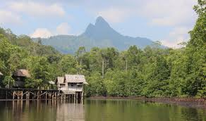

Southwest Papua: A Newly Unveiled Paradise
Southwest Papua, Indonesia's newest province, is a hidden gem waiting to be discovered. Despite its name suggesting a southwestern location, it occupies the northwest corner of Papua Island, offering a unique blend of breathtaking natural beauty, vibrant cultures, and untold adventures. From the bustling port city of Sorong to the world-renowned Raja Ampat archipelago, Southwest Papua promises an unforgettable experience.
A Land of Contrasts:
Imagine a place where lush rainforests cascade down to pristine beaches, where vibrant coral reefs teem with marine life, and where ancient traditions thrive in harmony with nature. This is Southwest Papua. The province boasts diverse landscapes, from coastal plains and mangrove forests to rugged mountains and hidden waterfalls.
Gateway to Raja Ampat:
Perhaps the most iconic attraction in Southwest Papua is Raja Ampat, an archipelago of over 1,500 small islands, islets, and shoals. This underwater paradise is known as the "Amazon of the Seas" due to its unparalleled marine biodiversity. Divers and snorkelers flock to Raja Ampat to explore its vibrant coral reefs, encounter manta rays, sharks, and countless species of fish.
Cultural Mosaic:
Southwest Papua is home to a rich tapestry of indigenous cultures. Various tribes, each with their own distinct languages, customs, and traditions, inhabit the region. Exploring these cultures offers a unique opportunity to learn about ancient ways of life and experience the warmth and hospitality of the local people.
Beyond Raja Ampat:
While Raja Ampat is a major draw, Southwest Papua offers much more to explore. The mainland boasts stunning landscapes, including the Arfak Mountains, which are home to unique flora and fauna and offer opportunities for trekking and birdwatching. The coastal areas also offer opportunities for fishing, kayaking, and exploring hidden beaches.
A Destination on the Rise:
As a newly established province, Southwest Papua is still relatively untouched by mass tourism. This makes it an ideal destination for adventurous travelers seeking authentic experiences and unspoiled natural beauty. However, with its growing popularity, now is the perfect time to discover this hidden paradise before the crowds arrive.
Come and Explore:
Southwest Papua invites you to embark on a journey of discovery. Whether you're a nature lover, a culture enthusiast, or an adventure seeker, this captivating province has something to offer everyone. Come and explore the wonders of Southwest Papua and create memories that will last a lifetime.
Preservation of Culture: Balancing development with the preservation of indigenous cultures and traditions is an ongoing challenge.
Sustainable Tourism: Promoting sustainable tourism that benefits local communities and protects the environment is crucial for the future of Southwest Papua.
Southwest Papua, Indonesia's newest province, is more than just a gateway to Raja Ampat. It's a region with a rich history, diverse cultures, and unique traditions often overlooked. This overview delves into some of the lesser-known aspects of Southwest Papua:
Ancient Roots: Like the rest of Papua, Southwest Papua has a long history of human habitation, with evidence suggesting settlements dating back thousands of years. The region was populated by various Papuan groups long before any European contact.
Linguistic Diversity: Southwest Papua is a linguistic hotspot, with numerous distinct languages spoken by different tribes. This linguistic diversity reflects the long history of independent development and interaction among these communities. Some of the languages spoken include Abun, Tehit, Moi, Maya, and others.
Trade Networks: Before colonial influence, indigenous communities in Southwest Papua engaged in trade networks with neighboring islands and coastal regions. This exchange facilitated the flow of goods, ideas, and cultural practices.
Dutch Presence: The Dutch exerted colonial influence over western New Guinea, including present-day Southwest Papua, as part of the Dutch East Indies.
Post-WWII Era: After World War II, the status of Western New Guinea became a point of contention between the Netherlands and Indonesia.
Act of Free Choice: The controversial Act of Free Choice (Pepera) in 1969 led to the integration of Western New Guinea into Indonesia.
Recent Provincial Status: Southwest Papua was officially established as a separate province in 2022, marking a new chapter in its administrative history.
Customary Law (Hukum Adat): Customary law plays a significant role in regulating social life within indigenous communities. These laws govern various aspects of life, including land ownership, conflict resolution, and social relationships.
Traditional Arts and Crafts: Beyond the well-known Asmat carvings (which are from a different region of Papua), Southwest Papua has its own distinct artistic traditions. These include:
Weaving: Traditional weaving using natural fibers is practiced in some communities, creating beautiful textiles with intricate patterns.
Bark Cloth Painting: Using tree bark as a canvas, indigenous artists create unique paintings with symbolic meanings.
Body Adornment: Traditional body adornments, including feathers, shells, and beads, are used for ceremonies and cultural events.
Oral Traditions and Storytelling: Oral traditions and storytelling are vital for preserving cultural knowledge and history. Stories passed down through generations convey important lessons, beliefs, and ancestral narratives.
Connection to Nature: Indigenous communities in Southwest Papua have a deep spiritual connection to the natural environment. They hold traditional beliefs and practices related to respecting and conserving nature.
Beyond Raja Ampat, the mainland of Southwest Papua holds many hidden cultural sites, including ancient rock art, sacred caves, and traditional villages. These sites offer glimpses into the rich history and cultural heritage of the region.
Southwest Papua is a region of immense cultural and natural wealth. By exploring its lesser-known aspects, we gain a deeper understanding of its unique heritage and the importance of its preservation.